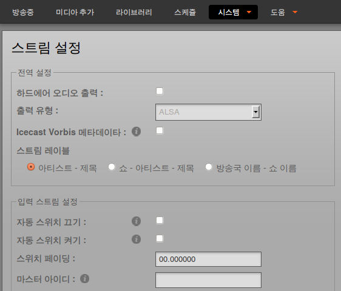

The LibreTime administration interface can be localized using the standard GNU gettext method. Using GitHub for this task means you don't have to tackle the whole of a localization yourself; just as much as you can manage.

First, you should check if a localization is already under way for your locale of choice. The best way to do this is to take a look at the 'master' branch in the GitHub repository for LibreTime at https://github.com/LibreTime/libretime. You can also ask in the LibreTime development forum at https://discourse.libretime.org/, where you might find community members who can help you with the translation.
GNU gettext means using a .po file for each language or dialect, a specially formatted plain text file with groups of three or more lines, like this example from LibreTime's Korean localization:
#: airtime_mvc/application/configs/navigation.php:57
msgid "Media Folders"
msgstr "미디어 폴더"The first of these three lines starts with the hash symbol, and references where this string of text is found in the source code by its file name and line number. If this string is found more than once in the source code, you will see other reference lines here. The second line contains the msgid, which is the original version of the string. The third line contains the msgstr, which is the translation of that string for the localization that this particular .po file relates to.
If you use the cross-platform program Poedit (http://www.poedit.net/) to edit the .po file, this formatting of the text is hidden by an easy-to-use GUI. The poedit package can be installed on most GNU/Linux distributions using the standard software installer. Versions of Poedit for Mac and Windows are available for free download from the project's homepage.
Before manually translating strings in Poedit from scratch, you should take a look at the online translation services available, such as Lingohub (https://lingohub.com) or Google's Translator Toolkit (http://translate.google.com/toolkit/), which both support gettext .po files. If using automatic translation, you can then use Poedit to fine-tune the localization and fix any formatting errors.
If you don't already have a GitHub account, you can sign up at https://github.com/signup/free. Once you have a GitHub account, you can fork a copy (https://help.github.com/articles/fork-a-repo) of the LibreTime project. Work for the next major version of the software is done in the master branch of each project, so that's the branch to checkout after you have made the initial git clone.
In the locale code de_CH, for example, de represents the German language and the suffix _CH indicates the dialect spoken in Switzerland. Some languages have a wide variety of dialect localizations, which can be differentiated with a suffix in this way. You should update the header information in the .po file, which includes the language code and a country code, using one of the existing .po files as a guide.
After forking the LibreTime git repository, make sure you're in the master branch:
git branch
devel
* masterCreate a new locale directory (e.g. airtime_mvc/locale/de_CH/LC_MESSAGES/ for German as spoken in Switzerland):
mkdir -p airtime_mvc/locale/de_CH/LC_MESSAGES/Copy the template airtime.po file into the directory you just created:
cp airtime_mvc_locale/template/airtime.po airtime_mvc/locale/de_CH/LC_MESSAGESand update the header information in the new copy of the airtime.po file using the nano editor:
nano airtime_mvc/locale/de_CH/LC_MESSAGES/airtime.poFor the example of Swiss German, the header of the file should now look like this:
# SWISS GERMAN (de_CH) translation for LibreTime.
# Copyright (C) 2013 Sourcefabric
# This file is distributed under the same license as the LibreTime package.
# Sourcefabric <contact@sourcefabric.org>, 2013.
#
msgid ""
msgstr ""
"Project-Id-Version: LibreTime 3.0-Alpha\n"
"Report-Msgid-Bugs-To: https://discourse.libretime.org/\n"After using an online translation tool to begin a new localization, you can load the exported .po file into Poedit and complete your translation there. Enter the localization team's contact information and language into Poedit's Edit -> Preferences and Catalog -> Settings dialogs, which will be added to the .po file. When you save a .po file in Poedit, the corresponding binary .mo file will be compiled automatically.
Finally, git add, git commit and git push these new .mo and .po files to your GitHub fork of the project, and send a git pull request (https://help.github.com/articles/using-pull-requests) to the LibreTime developers. The localization can then be added to a forthcoming LibreTime release.
If you don't want to work with git, that's no problem - download a copy of the .po template file, edit the header, run it through an automatic translator and check it with Poedit. Then email your contribution to the LibreTime team as an attachment - it will be very welcome! However, learning to use git is a good idea, because it means you can work directly on the current source code, share the localization work with the LibreTime community, and avoid duplicated effort.